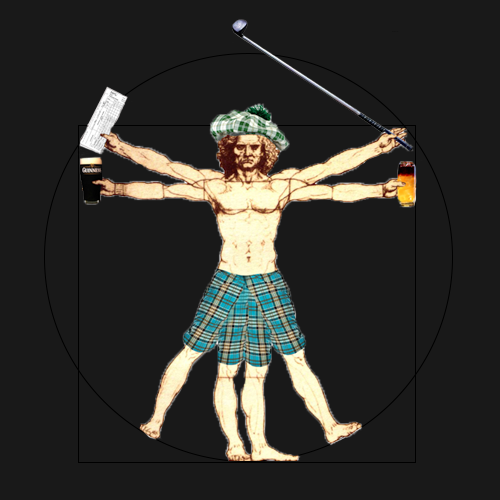
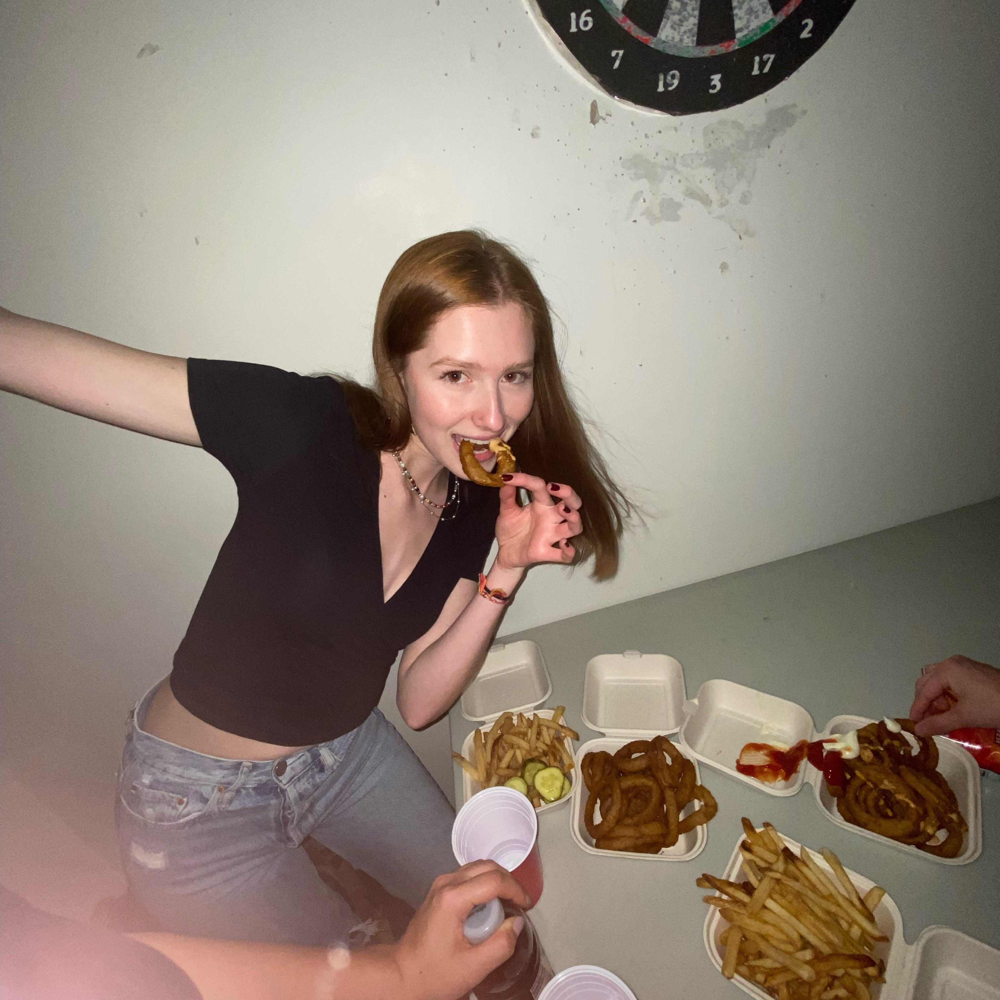

Welcome to the
2nd Ever Pub Golf!
Save the date: Saturday, March 12th for the most degen shit you've ever seen.



Rules:
Like the game of golf, pub golf has the standard 9 holes where each bar is considered a hole. However, some of you dipsticks are either lightweights or don't have a fake so I've cut it down to like ~6 holes and all the alc is just in a backpack because we can't do a proper pub crawl.
Each hole will have a par number which represents how many sips it should take to complete the drink. Lets say Hole 2 is a full glass of wine par 3, that means you need to drink it in 3 sips. 2 sips is scored a -1, 4 sips is scored a +1 just like golf. Some holes, labeled in blue, will be designated water hazards meaning that you can not use the bathroom there.
Logistics:
- Teams of 4???
- Start at 7:00pm
- Greg
- BnH
- Sci Li
- CIT
- OMAC
- Wellness
The Course:
- Edward 40 Hands - infinite
- Glass of Wine - Par 3
- Top 3 Floors of the Sci Li - Par 3
- Hot chocolate + Baileys - Par 4
- Shotgun - Par 1
- Mimosa - Par 3
Fodder:
- PK Shootout
- Say it or shot it
- Standup jokes
- Karaoke
- Pickup lines
Penalties:
- Spilling is a +1
- Falling is a +3
- Throwing up is a +5
Bonuses:
- Best dressed -1
- Best team pic -1
- Getting a random person’s number -1
Forfeits:
- Red ass?
- Winners pick losers outfits for a week?
- Losers have to post/text something embarrassing?
Meet the Golfers
Alex Bao
Annika Sharp

Olivia Bemis-Driscoll
Om Naphade
Tanya Deshpande